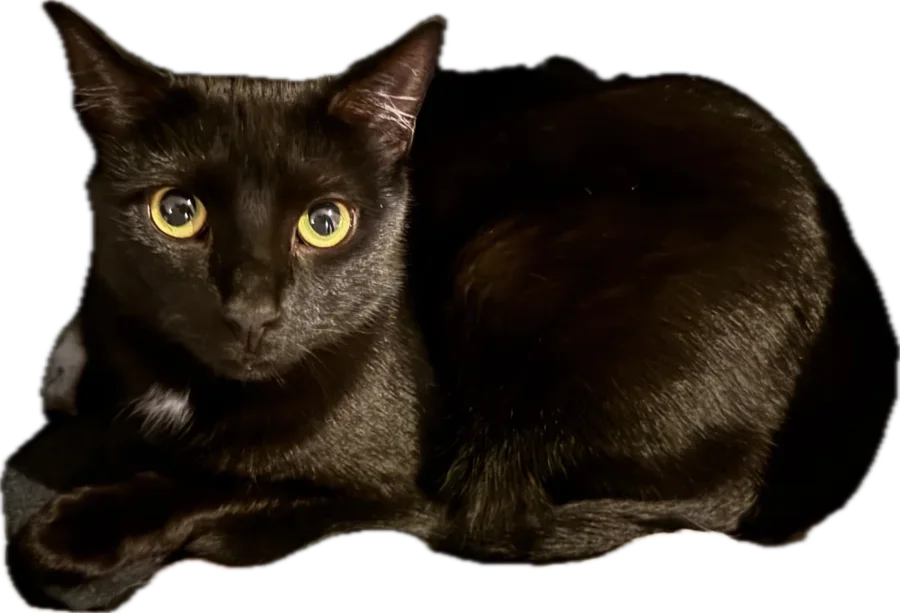
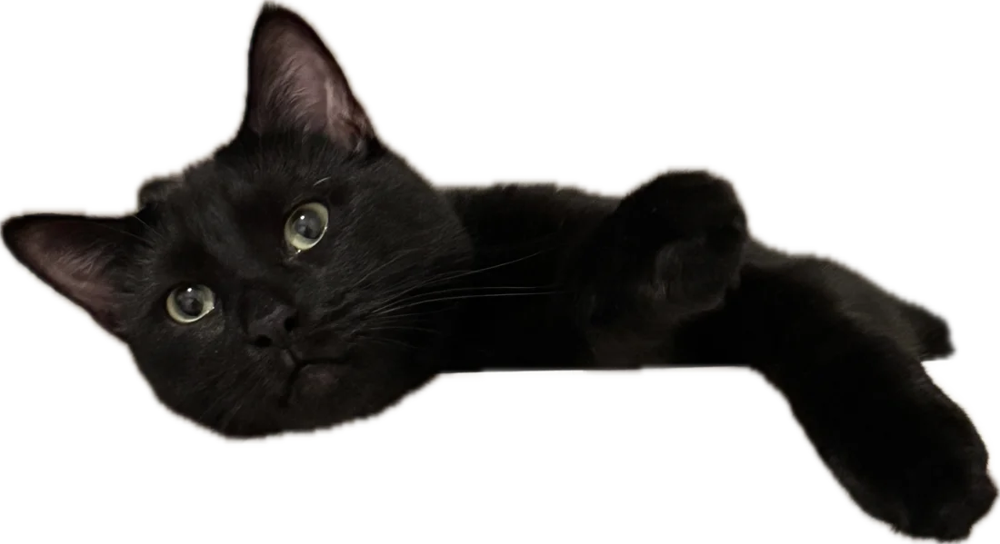

Sep 2026 — Present
Research Assistant
Rollins School of Public Health, Emory University · Atlanta, GA


I'm a PhD student in Computer Science and Informatics at Emory University working on machine learning for biological systems. My research focuses on representation learning for high-dimensional biological data, particularly single-cell and multi-omics data, with an emphasis on integrating data-driven models with biological knowledge. Before Emory, I spent 2.5+ years doing research at NJIT and UPenn in microbiome analysis, cancer genomics, and single-cell modeling.
Cross-tissue Graph Attention Networks for Semisupervised Gene Expression Prediction accepted to Briefings in Bioinformatics.
Started my Ph.D. in Computer Science and Informatics at Emory University.
Our survey Transformers for Single-Cell Sequencing is published in Briefings in Bioinformatics.
Graduated from NJIT with an M.S. in Data Science (GPA 4.0, ranked 1/65).
Representation Learning · Generalization · Biological Inference
How can we learn meaningful biological representations?
When and why do biological representations generalize?
How can ML enable reliable biological inference?
Data heterogeneity · Experimental design · Biological priors · Interpretation
ICLR 2027 (under review)First authorUnder review
Briefings in Bioinformatics (accepted)
Briefings in Bioinformatics 27(3), bbag332First author
Molecular Cancer 25(1), 127